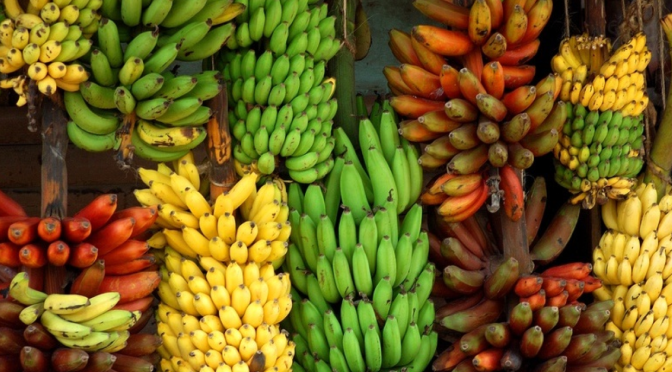

Saging is an elongated, edible fruit – botanically a berry – produced by several kinds of large herbaceous flowering plants in the genus Musa. In some countries, bananas used for cooking may be called "plantains", distinguishing them from dessert bananas. The fruit is variable in size, color, and firmness, but is usually elongated and curved, with soft flesh rich in starch covered with a rind, which may be green, yellow, red, purple, or brown when ripe.
This fruit grows in clusters hanging from the top of the plant. Almost all modern edible seedless (parthenocarp) bananas come from two wild species – Musa acuminata and Musa balbisiana. The scientific names of most cultivated bananas are Musa acuminata, Musa balbisiana, and Musa × paradisiaca for the hybrid Musa acuminata × M. balbisiana, depending on their genomic constitution. The old scientific name for this hybrid, Musa sapientum, is no longer used.